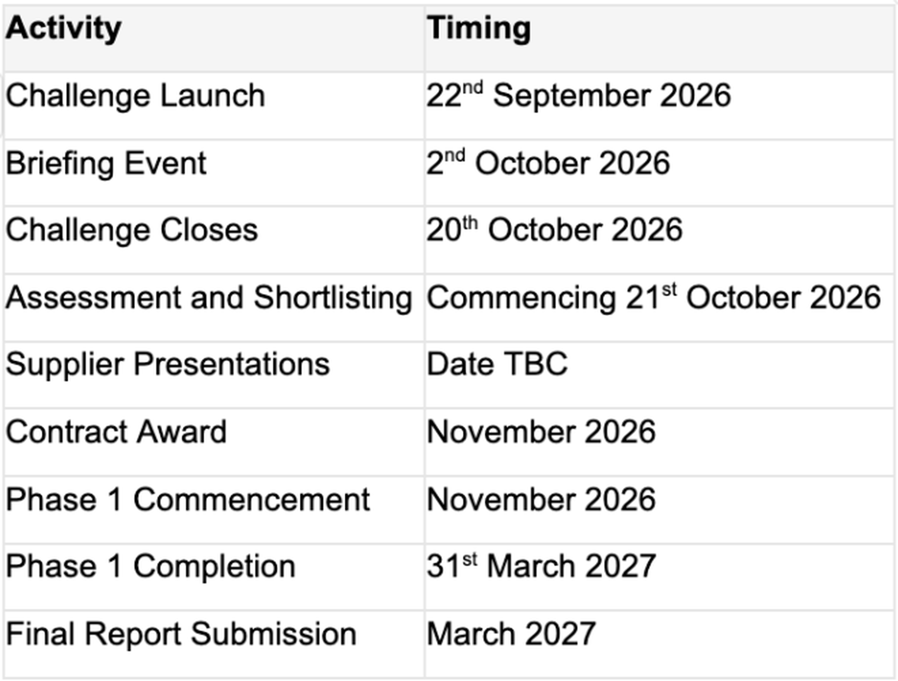

CTM University Health Board is seeking innovative solutions that help reduce missed appointments and improve access to planned care.
The challenge focuses on understanding and addressing the barriers that lead to non-attendance, supporting fairer access to services, improving patient experience and making better use of NHS resources.
We welcome ambitious, creative and collaborative approaches that have the potential to deliver meaningful benefits for patients, staff and health and care systems across Wales. Solutions should be developed with future scalability, adaptability, affordability and long-term sustainability in mind, supporting potential adoption across multiple organisations and care settings where appropriate.
Cwm Taf Morgannwg University Health Board (CTM UHB) experiences persistently high rates of missed outpatient appointments, with approximately 64,000 appointments missed over the last 12 months. These missed appointments create challenges for patients and services alike, contributing to longer waiting times, underutilised clinical capacity, financial inefficiencies and poorer patient experience.
CTM estimates that missed appointments may account for approximately £9.6 million of avoidable lost value each year, representing a significant opportunity to improve both patient access and the use of NHS resources.
Evidence suggests that non-attendance is often linked to a range of practical, behavioural, communication and accessibility barriers rather than a simple choice not to attend. These barriers can include challenges associated with appointment communication, transport, geography, caring responsibilities, socioeconomic factors, digital exclusion, health inequalities and service design.
Contracts for Innovation Cymru is seeking innovative solutions that help people overcome these barriers, reducing missed appointments whilst improving access to planned care.
The challenge is deliberately open and does not prescribe a particular technology, product or service. We welcome ideas from a wide range of sectors and disciplines and encourage applicants to think creatively about how attendance, access and patient experience can be improved.
64,000 missed outpatient appointments each year
CTM UHB recorded approximately 64,000 missed outpatient appointments over the last 12 months, representing a significant loss of clinical capacity and opportunities for patient care.
8.6% average outpatient DNA rate
Missed appointments continue to affect service efficiency, increase operational pressures and contribute to longer waiting times across planned care services.
Attendance is influenced by a range of interconnected barriers
Evidence gathered by CTM highlights factors including appointment communication, transport and travel challenges, socioeconomic inequalities, digital exclusion, caring responsibilities and wider accessibility issues. These barriers often interact and can disproportionately affect some communities and population groups.
Improving attendance is about more than reducing waste
Every missed appointment represents a lost opportunity for care. CTM estimates that missed outpatient appointments may account for approximately £9.6 million of avoidable lost value each year, whilst also contributing to delays in diagnosis, treatment and access to services. Reducing non-attendance has the potential to release clinical capacity, improve productivity, reduce waiting times and support fairer access to care across Wales.
We believe innovative approaches can help people overcome the barriers that prevent them from attending appointments, enabling services to make better use of existing capacity while improving access to care for those who need it most. The challenge provides an opportunity to explore new ways of supporting attendance, improving patient experience and reducing inequalities through scalable solutions that could benefit health and care services across Wales.
Missed appointments represent a significant challenge across health and care services.
For patients, they can result in delays to diagnosis, treatment and ongoing care. For healthcare organisations, they contribute to inefficiency, wasted capacity and increased waiting times at a time when demand for services continues to grow.
CTM's original review highlighted that attendance can be influenced by a combination of factors, including:
Delayed or ineffective appointment communication
Transport and travel challenges
Long travel distances to services
Socioeconomic inequalities
Digital exclusion
Caring and employment responsibilities
Accessibility needs
Wider social determinants of health
Addressing these challenges has the potential to improve patient access, support more efficient use of NHS resources, reduce inequalities and contribute to more sustainable healthcare delivery.
We are seeking innovative approaches that help reduce missed appointments and improve access to planned care.
Solutions may address one or more aspects of the challenge, including but not limited to:
Appointment communication and engagement
Accessibility of information
Appointment planning and management
Behavioural approaches that encourage attendance
Identification of individuals at increased risk of non-attendance
Travel and accessibility barriers
Digital tools and services
Community-based support models
Service and pathway redesign
Data-driven approaches to improve attendance and access
Applicants are encouraged to consider how different barriers interact and how solutions may support a diverse population with differing needs and circumstances.
We are not seeking a predetermined solution and welcome a broad range of innovative approaches.
In Scope
We are interested in solutions that can contribute to one or more of the following:
Improving appointment attendance and reducing missed appointments.
Improving access to planned care services.
Appointment communication and engagement.
Accessibility of information and services.
Appointment planning, scheduling and management.
Behavioural approaches that support attendance.
Identification of people at increased risk of non-attendance.
Reducing practical barriers to accessing services.
Travel, transport and accessibility barriers that affect a person's ability to attend appointments.
Data-driven, digital or technology-enabled approaches.
Community-based or service redesign approaches.
Improving equity of access across different populations and geographic settings.
Welsh language, accessibility and inclusive service delivery.
Out of Scope
We are not seeking projects that:
Focus solely on increasing demand for healthcare services.
Are primarily academic or research studies with no credible route to implementation.
Require extensive fundamental research before development can commence.
Cannot demonstrate a realistic route to adoption within health and care services.
Do not consider affordability, scalability or long-term sustainability.
Rely solely on English-language patient-facing delivery.
Seek to replace appropriate clinical oversight or professional judgement where this remains necessary.
Projects focused primarily on the provision, commissioning or subsidisation of transport services (for example taxis, bus services, patient transport provision or similar transport schemes).
Successful solutions should demonstrate potential to deliver measurable improvements in one or more of the following areas.
Patients and Citizens
Improved access to planned care services
Increased appointment attendance
Improved patient experience
Reduced travel and logistical burden
Better health outcomes through more timely access to care
Fairer access irrespective of location, income or personal circumstances
Staff
Improved clinic utilisation
Reduced administrative burden
More effective use of clinical time
Improved operational efficiency
Improved staff morale
Health and Care Systems
Reduced DNA rates
Improved productivity and service flow
Reduced waiting times
Better use of public resources
Reduced health inequalities
Improved sustainability and environmental outcomes
Potential measures of success may include attendance rates, service utilisation, waiting times, patient experience, equity measures, operational efficiency and value for money.
Future Adoption, Scalability, Affordability and Sustainability
Contracts for Innovation Cymru is seeking solutions that have the potential to deliver benefits beyond a single organisation or pilot setting.
Applicants should consider how their proposed solution could:
Be adapted for use across different health and care settings.
Support populations with differing needs, demographics and levels of rurality.
Be transferable across multiple Health Boards and regions across Wales.
Integrate with existing services, processes and digital infrastructure where appropriate.
Demonstrate a viable route to long-term adoption and sustainability.
Deliver ongoing value beyond the initial funded project period.
Provide confidence that the solution could be implemented, operated and maintained at an affordable cost, supporting long-term adoption across Wales.
While the challenge is being led by Cwm Taf Morgannwg University Health Board, successful solutions should demonstrate the potential to support wider adoption across Wales where there is evidence of benefit and demand. Solutions that can be adapted to different care settings, patient populations and local circumstances may offer additional long-term value and should be designed with scalability, adaptability, affordability and long-term sustainability in mind.
Phase 1 will support the exploration, development and early testing of innovative approaches.
Activities may include:
Discovery and research
User engagement and co-design
Feasibility assessment
Prototype development
Early testing
Data analysis
Service design
Technical validation
Applicants should demonstrate a clear understanding of how they will explore the challenge, engage stakeholders and generate evidence to support further development.
Phase 2: Potential Future Development and Real-World Evaluation
Progression to Phase 2 is not guaranteed.
Subject to future funding availability, strategic priorities and the outcomes generated through Phase 1, selected projects may be invited to participate in a subsequent Phase 2 competition focused on further development, real-world testing and evaluation.
Projects progressing to this stage would be expected to undertake testing within operational health and care settings.
Activities may include:
Pilot deployment
Evaluation of outcomes and impact
Further development and refinement
Assessment of scalability and sustainability
Development of future adoption pathways
The aim of Phase 2 is to generate robust evidence of effectiveness, acceptability, value and wider applicability.
Collaboration and System Learning
Whilst this challenge is being led by Cwm Taf Morgannwg University Health Board, missed appointments and barriers to access affect health and care organisations across Wales. Solutions developed through this challenge should demonstrate an understanding of the wider health and care context and the factors that influence attendance across different populations and settings.
Collaboration will be an important component of successful projects. Applicants will be expected to engage with relevant stakeholders to inform the development, testing, evaluation and future adoption of their solution.
Relevant stakeholders may include:
NHS organisations across Wales
Rural Health and Care Wales
Local authorities
Community and voluntary sector organisations
Academic institutions
Accessibility and transport stakeholders
Patient and public representatives
Applicants should describe how collaboration and stakeholder engagement will support their proposed approach and contribute to the generation of robust evidence, future adoption and wider applicability across Wales.
Solutions that demonstrate potential for adaptation across different organisations, populations and geographic settings are likely to offer greater long-term value and support wider benefit across Wales.
Welsh Language, Inclusion and Accessibility
Wales is a bilingual nation and Welsh language considerations must form an integral part of solution design. Any successful solutions must include development of both Welsh and English public facing content.
Applicants must demonstrate how their solution will:
Support bilingual service delivery.
Ensure Welsh and English users receive an equivalent experience across all functions, content, communications and interactions.
Be bilingual by design, rather than relying on translation as a later enhancement.
Support people to interact with services in their preferred language.
Provide patient-facing content, communications and notifications in Welsh and English.
Support the principles of the Welsh Language Active Offer.
Consider Welsh language and accessibility requirements together throughout design, testing and implementation activities.
Engage Welsh-speaking users in testing and evaluation activities where appropriate.
Welsh language functionality should be embedded from project inception and must not be treated as a future enhancement or optional module.
Where solutions incorporate automation, artificial intelligence, decision-support or advanced digital functionality, applicants should explain how Welsh language provision will be supported equitably and maintained as the solution evolves.
Applicants may find the following resources useful:
Welsh Government Bilingual Technology Toolkit for a Good User Experience.
Accessible Communication and Information Standards for Healthcare.
Applicants should also consider the needs of people who may experience barriers associated with:
Communication
Sensory impairments
Cognitive impairments
Digital exclusion
Literacy
Language
Travel and accessibility
Socioeconomic circumstances
Solutions with broader multilingual capability are also encouraged where this supports accessibility, inclusion or the needs of diverse populations, provided Welsh and English provision remains fully supported.
Data, Governance and Ethics
Some solutions may require access to operational, attendance or demographic data.
At this stage, applicants are not expected to have fully developed governance arrangements in place. However, proposals should demonstrate awareness of:
Information governance requirements
Data protection requirements
Cyber security considerations
Ethical use of data
Patient trust and transparency
Successful applicants will receive support from challenge partners to develop appropriate governance arrangements where required.
Social, Economic and Community Value
Applicants are encouraged to consider how their solution could deliver wider benefits for Wales.
This may include:
Supporting Welsh innovation capability
Skills development
Workforce development
Community resilience
Strengthening local supply chains
Supporting inclusive economic growth
These considerations should be proportionate to the size and nature of the project.
Phase 1 Funding
Funding Available: Up to £200,000
The total funding available for the competition can change and the funders reserve the right to adjust the provisional funding allocations, i.e., should additional funding become available.
Number of Projects: Current funding is available to support a portfolio of projects, dependent upon the number/quality of submissions received.
Portfolio Approach
Funding decisions may be made using a portfolio approach, recognising that complex challenges often require a range of complementary solutions rather than a single intervention. Consideration will be given to the overall balance of projects supported, the evidence generated and the potential for wider adoption and learning across Wales.
Support Available
Successful applicants may benefit from access to:
Clinical expertise
Operational service knowledge
Patient and public involvement
Innovation support
Data and evaluation expertise
Relevant stakeholders and challenge partners

(Dates may be subject to change)
To register for the virtual Briefing Event, to be held on the 2nd October, please follow the link below:
Microsoft Teams - Briefing Event
Shortlisted applicants will be invited to attend an in-person assessment session.
Applicants will be expected to:
Present their proposed approach
Demonstrate understanding of the challenge
Discuss feasibility, deliverability and impact
Respond to questions from an assessment panel
The session will take place in a collaborative discussion format, similar to a "Dragon's Den" style assessment process.
If your application is successful, you will receive a standard Contracts for Innovation contract to deliver the proposed activity. Since this is a UK wide template, the terms and conditions are not subject to change, therefore please familiarise yourself with the draft contract, prior to submitting your application.
The ambition of this challenge is not simply to introduce new rehabilitation tools or technologies.
The longer-term opportunity is to create a more connected, equitable and sustainable approach to rehabilitation and recovery in Wales, ensuring that stroke survivors can access appropriate support, achieve the best possible outcomes and do not feel abandoned during their recovery journey, regardless of where they live.
The strongest applications will demonstrate practical short-term impact whilst creating foundations for wider transformation across rehabilitation and recovery services in Wales.
Find out more about Challenges - Contracts for Innovation Cymru
For any enquiries about this competition e-mail: ContractsforInnovationCymru@wales.nhs.uk
Funding Available: £200,000
The total funding available for the competition can change and the funders reserve the right to adjust the provisional funding allocations, i.e., should additional funding become available.
The Competition Brief describes the challenge to be addressed during the competition. It should be read in conjunction with the accompanying tender documents for this competition, all of which are available to download from this website prior to the tender submission deadline.
Next Steps?
Click +Create your idea at the top or bottom of this page to begin your submission
Complete every section (A-K) of your submission
Submit your idea prior to the deadline on 20th October 2026 at 12:00 (noon) BST.
Contracts for Innovation
https://iuk-business-connect.org.uk/programme/contracts-for-innovation/
Contracts for Innovation Contract
20260604_Contracts-for-Innovation-Contract-V8.6_May-2026.pdf
Application Guidance
Application-Guidance-Notes.pdf
Evaluation Questions
Evaluation-Questions.pdf
FAQs
Contracts-for-Innovation-Cymru-FAQs.pdf
Challenge Brief
Challenge-Brief---Reducing-Missed-Appointments-and-Improving-Access-to-Planned-Care.pdf